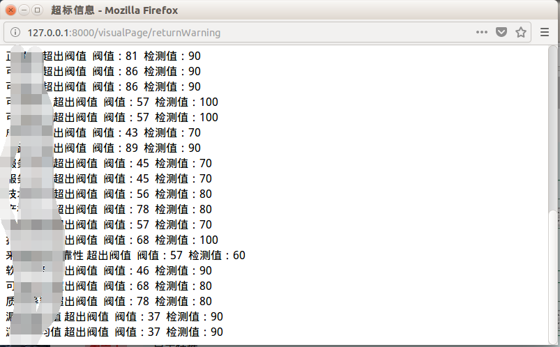
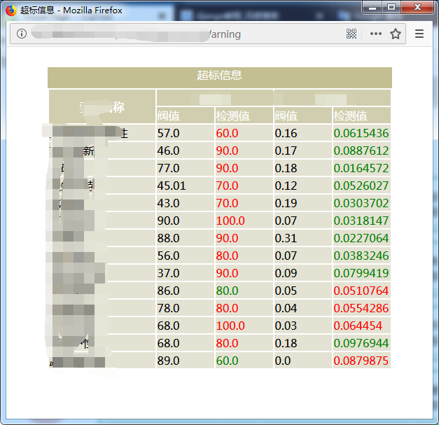

Django中利用js来操作数据的常规操作一般为点(.)操作符来获取字典或列表的数据，一般如{{data.0}}，{{data.arg}}
但有时如果数据是嵌套类型的数据时，直接获取某个值就变得困难了，比如下面的格式要获取
correct中qxl的值startArgsSet={"correct":{"qxl":0,"kkx":0},"reliable":{"qxl":0,"kkx":0},"security":{"qxl":0,"kkx":0},"understand":{"qxl":0,"kkx":0},"entropy":{"qxl":0,"kkx":0},
"mature":{"qxl":0,"kkx":0},"active":{"qxl":0,"kkx":0},"service":{"qxl":0,"kkx":0},"file":{"qxl":0,"kkx":0},
"tech":{"qxl":0,"kkx":0},"property":{"qxl":0,"kkx":0},"organize":{"qxl":0,"kkx":0},"develop":{"qxl":0,"kkx":0},
"source":{"qxl":0,"kkx":0},"update":{"qxl":0,"kkx":0},"fix":{"qxl":0,"kkx":0},
"quality":{"qxl":0,"kkx":0},"meanNum":{"qxl":0,"kkx":0},"variance":{"qxl":0,"kkx":0}
}这时候如果改变数据格式为列表中的无嵌套字典格式比较麻烦，可以自定义过滤器来获取数据，
from django.template.defaulttags import register
@register.filter
def getArgQxlValue(dictionary,arg):
return dictionary[arg]['qxl']
@register.filter
def getArgKkxValue(dictionary,arg):
return dictionary[arg]['kkx']
@register.filter
def getArgName(dictionary,arg):
return dictionary[arg]['name']在模板中就可以以这样写
<!-- the second important page of the project-->
{% load staticfiles %}
<!DOCTYPE html>
<html>
<head>
<meta charset="utf-8">
<title>超标信息</title>
<script src="{% static 'js/a-mynewjs.js' %}"></script>
</head>
<body>
{{ guestSetArgs|safe }}<br><br><br>
{{ warningdata|safe }}<br><br>
<script>
{% for i in guestSetArgs %}
{% for j in warningdata %}
if("{{i}}"=="{{j}}")
{
if(Number({{warningdata|getArgQxlValue:j}})>Number({{guestSetArgs|getArgQxlValue:i}}))
var setArgStr="{{warningdata|getArgName:i}} 超出阀值 阀值：{{guestSetArgs|getArgQxlValue:j}} 检测值：{{warningdata|getArgQxlValue:j}}<br>"
document.write(setArgStr);
}
{% endfor %}
{% endfor %}
</script>
</body>
</html>形如{{warningdata|getArgQxlValue:j}}，就可以获取到里面的值了

稍做美化

参考自https://docs.djangoproject.com/en/2.2/howto/custom-template-tags/